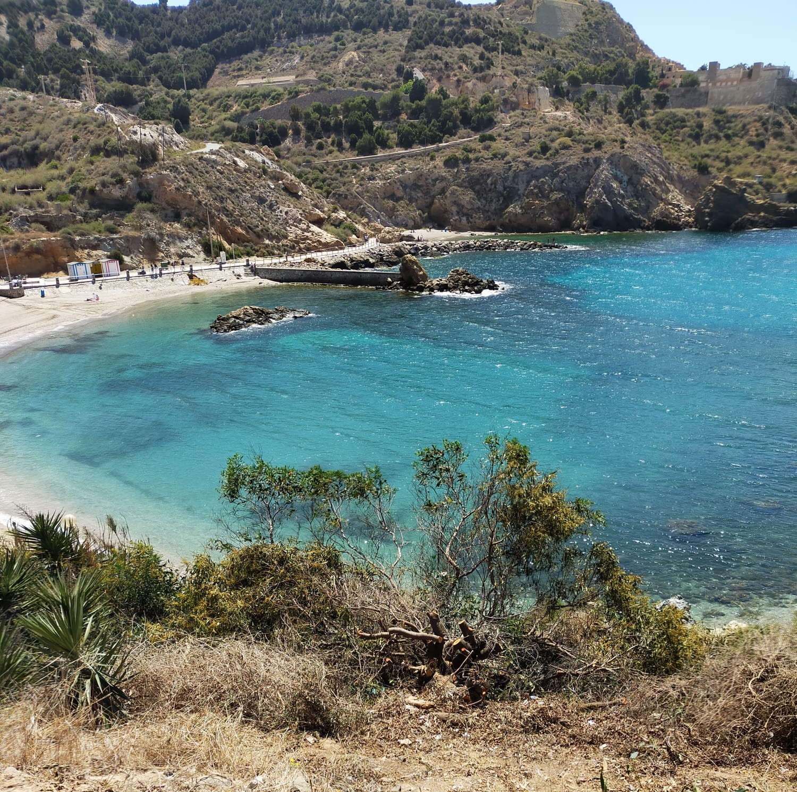

CityLoop Quest Carthagène


La gastronomie de Carthagène est marquée par la mer, le Campo de Cartagena et les habitudes populaires du sud-est espagnol. Le caldero, riz de pêcheurs associé au littoral et au Mar Menor, compte parmi les spécialités les plus emblématiques. Il rappelle une cuisine de bateau, de bouillon concentré, de poisson et de partage.

Le café asiático est l’autre symbole incontournable. Servi dans un verre caractéristique, il associe café, lait condensé, brandy, Licor 43 et parfois cannelle ou citron selon les habitudes. Son identité est très cartagenera : énergique, sucrée, légèrement théâtrale, parfaite après un repas ou lors d’une pause en terrasse.
Les produits de la mer restent essentiels : poissons, fritures, salaisons, poulpe, crevettes ou préparations simples qui laissent parler la fraîcheur. Les influences régionales ajoutent légumes, riz, agrumes et huile d’olive. La cuisine locale n’est pas luxueuse par principe ; elle devient intéressante quand elle relie terroir, port et mémoire familiale.

Pour goûter la ville, alternez une adresse de port, une terrasse du centre et une table plus locale hors des axes touristiques immédiats. Carthagène se savoure mieux sans précipitation, avec un œil sur les façades et l’autre sur l’assiette.